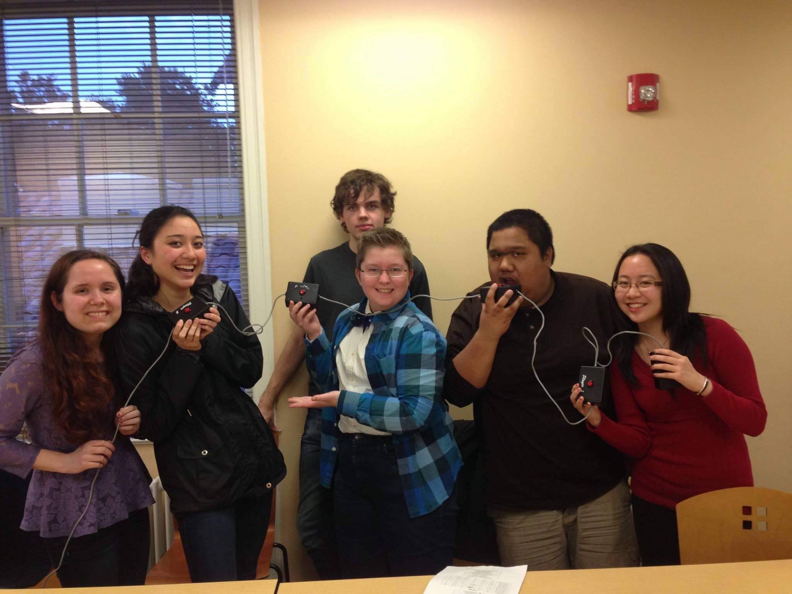
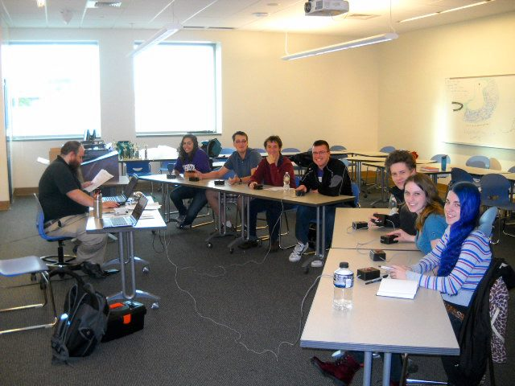

Quizbowl at the 2023 Senior Sendoff (Senior Coby Tran is lying across the laps of the leaving officers: Kay Lee, Elliana Wejak, Kevin Kodama, and Fish Tsai from left to right)
Club Leaders: Kevin Kodama, Elliana Wejak, Ella L'Heureux, Euan McCubbin, Vikshar Athreya, Kay Lee, Fish Tsai, Jayden Murphy, Catherine Welch
The Discord Era of the quizbowl team at UW started during the COVID-19 pandemic. At the end of 2020, the club president position unexpectedly went to Kevin Kodama, a formerly active high school player from Illinois. During this time, the club's focus shifted from traditional in-person quizbowl to club outreach and online events. Club membership grew rapidly during this time, attracting 20-30 members at a typical practice. The club also gained some visibility when Kay Lee appeared on Jeopardy! and Shruthika Kandukuri, Ella L'Heureux, Jayden Murphy, and Catherine Welch appeared on the show College Bowl. In addition, the club became known for its significant proportion of bisexual club members. This era is ongoing.
2024-25 Season
President: Euan McCubbin
Although ACF Nationals was not attended, this year saw great growth both in numbers of the club, as well as expanding non-competitive club activities like housewrites and our Doubles Tournament. Senior sendoff this year featured a well put together video by Haylee, but the highlight of the year might have been the solving of a years long UWQB mystery...
2025 UQC Nationwide Novice: Playing in the novice division UW sent one team that took second place with a record of 6-2 with Carson Kessler being the teams top scorer with a 50.0 PPG followed closely by Simarya Ahuja with 37.5 PPG.
2025 ICT: This was the first year in which UW was able to send both a Division I and Division II team to the ICT in Rosemont, Illinois. Due to some last-minute difficulties, however, the Division I team consisted only of junior Sasha Fillbrandt and first-year Anya Srinivasan. Despite that, Sasha and Anya managed to win 4 games across prelims and playoffs and Sasha was the 17th highest scorer with a PP20TUH of 38.36 in a field with many graduate students. The Division II team suffered tough losses in the prelims and a devastating tiebreaker loss to Amherst that blocked them from the second-highest playoff bracket, but ended up placing 18th in the country nonetheless.
PLAYTIME Northwest: With 2 teams of 3 in this field, UW B performed the best taking second place with an 8-2 record losing to ASU. Both Sasha Fillbrandt and Yaj Jhajhria were in the top 4 scorers with PPGs of 97.0 and 56.0 respectively.
MRNA IV: UW sent 1 and a half teams as both Andrea and Sasha teamed up with our northern neighbors to form Washberta which came out on top with a PPB 0.01 higher than the second place ASU -> Stanford -> ASU Pipeline. Sasha Fillbrandt was the 4th highest scorer and top scorer on Washberta.
2025 NAQT SCT: UW had a stellar tournament, having two teams qualify for ICT, one in each division. UW A swept the competition while UW C beat Berta in a tense DII finals. Sasha Fillbrandt topped the individual ladder with 81.67 PPG followed closely by Andrea Yu (71.8 PPG) as a solo on Washington H. In total UW claimed 4 of 5 top individual scorers with Yaj Jhajhria (65.0 PPG) and Benjamin Li (57.2 PPG) placing 4th and 5th respectively.
2025 ACF Regionals: Two UW teams battled for a chance at qualifying for ACF Nationals. With a record of 8-4, UW A came in second place, narrowly losing to UBC in this triple round robin tournament. Regardless of the outcome Sasha Fillbrandt, Yaj Jhajhria, and Catherine Welch took the top three individual spots with PPGs of 52.5, 40.8, and 35.0 respectively.
2024 ACF Winter: With a 2/3 Canadian field, UW sent two teams with UW A lost the second game of an advantaged finals after placing 2nd in prelims. Sasha Fillbrandt placed 2nd individually in the Prelims with a PPG of 51.0. The teams and staffers also enjoyed a viewing of the Vancouver Sulfur piles.
2024 ACF Fall: 8 total teams were fielded plus staffers for UW's ACF Fall mirror. Themed after the seven deadly sins, UW had 7 full teams of 4 along with UW Chastity made of Andrea Yu and Euan McCubbin. In the top 5 individuals, UW's Beck Faletti (68.9 PPG), Alan Fan (62.2 PPG), and Dylan Bianchi (57.2 PPG) placed 2nd, 3rd, and 4th throughout prelims and finals.
2023-24 Season
President: Ella L'Heureux
Competitively, 2023-24 was historically one of the best years for UW Quizbowl. This included a great performance at ACF Regionals, a podium finish for both UW teams at ACF Winter, and UW's best performance yet at ICT. Overall involvement in question writing also increased, bolstered by club member Lucas Mansfield's acceptance into the NAQT writing staff and the growth of eccentric club housewrites.
2024 NAQT ICT: This year marked UW’s best performance yet at ICT, and UW’s first top-ten finish at ICT. The UW team consisting of Sasha Fillbrandt, Sophie Higgs, Ben Shi, and Catherine Welch placed 8th in a highly competitive field of 32 teams in the ICT Division II. Individually, Catherine placed 12th with 40.74 PPG and Sasha placed 19th with 37.65 PPG.
2024 Mixed Doubles Tournament: UW Quizbowl brought back the intra-club Mixed Doubles tournament for a second year in a row. This year, 11 pairs of doubles battled through seven rounds of Quizbowl. In the end, team Stelman came out on top with a 6-1 record. The 1st, 2nd, and 3rd top scoring individuals were Sasha Fillbrandt (75.7 PPG), Sophie Higgs (51.7 PPG), and Fish Tsai (37.1 PPG).
2024 NAQT Northwest SCT: Four UW teams competed in the Northwest mirror of SCT. Washington A, Washington D, and Washington B came out on top after the preliminary double round-robin. In the playoff round-robin, Washington A won both of their playoff rounds and advanced to ICT, completing the tournament with a perfect 10-0 record. Sasha Fillbrandt was the top individual scorer, with a 76.50 PPG and 28 powers.
2024 "Northwest" ACF Regionals: UW sent one team to ACF Regionals. Playing against teams from the US, Canada, and France, UW finished the tournament in 3rd. Isaac Olson ranked 10th individually with a PPG of 35.45.
2023 ACF WinterFor the first time since pre-pandemic, UW competed in an in-person ACF Winter tournament, sending two teams across the border to UBC. In preliminary round-robin play, UW A placed 1st and UW B came out 2nd. Both UW teams qualified for the upper bracket in the playoffs. UW A placed 2nd in the upper bracket, while UW B placed 1st and won the tournament. Catherine Welch from UW A was UW’s top scorer, placing 2nd individually with a 39.00 PPG. Other UW individuals in the top 10 included Jayden Murphy from UW B at 3rd, Isaac Olsen from UW A at 4th, and Shruthika Kandukuri from UW B at 6th.
2023 ACF Fall: UW hosted the 2023 ACF Fall virtually and sent three teams. Teams were split into two groups for round-robin play. The top six teams across both groups were placed in the upper bracket while the others were placed in a lower bracket, and each bracket played a playoff round robin. ASU A finished 1st in the upper bracket, but UW A placed 3rd in the lower bracket. Emma Howell from UW A achieved a 53.50 PPG and became the 4th-best individual scorer of the entire tournament, while Shruthika Kanduri from UW C and Sonya Bates from UW B placed 9th and 10th, respectively.
2022-23 Season
President: Elliana Wejak
This year marked UW's return to traditional in-person quizbowl with the 2023 Northwest SCT. There was also a rise in the number of in-person social events, most notably the quarterly Hot People Packet. UW sent two different teams to national championships this season (UCT and ICT) and hosted its first in-person tournament since the pandemic. The year also saw a gradual transfer of power to a younger officer core, led by Ella L'Heureux.
2023 Canadian Novice - Northwest: UW sent three teams to an online mirror of Canadian Novice, which was primarily composed of teams from the Midwest. The most successful team was UW Red Velvet, which was composed of Andrea Yu, Emma Howell, Anirudh Kumar, and Nash Rickert. The team came in 2nd with a 6-2 record, taking a game off of eventual champions Boston University, and Andrea Yu was the third-highest scorer overall with 53.13 PPG. UW Tiramisu and UW Black Forest finished 3rd and 6th respectively.
2023 NAQT ICT: UW sent an older team of Kevin Kodama, Kay Lee, Coby Tran, and Elliana Wejak to the 2023 Intercollegiate Championship Tournament, which was hosted in Chicago. The lead-up to the tournament was chaotic, as a storm system prevented many teams' flights (including UW's) from making it in on time. UW lost four tight prelim games on the last tossup, sending them to the third playoff bracket. The team ended up going 4-9 and finishing in 23rd place out of 32. Kevin Kodama was the eighth-highest scorer overall, with 60.42 PPG. The tournament was eventually won by relative newcomers Waterloo.
2023 IQBT UCT: UW sent its younger team of Catherine Welch, Coby Tran, Isaac Olson, and Ben Shi to the inaugural 2023 Undergraduate Championship Tournament, which was hosted online. The team finished 17th out of 32 with a 5-8 record, putting them in the middle of the pack of some very experienced teams. The tournament lasted for two days and was eventually won by Chicago A.
2023 NAQT Northwest SCT: UW sent five full teams to the 2023 Northwest SCT, its best in-person turnout ever. This was also UW's first in-person tournament since 2020. UW A cleared the field, going undefeated in a double round robin against the four other house teams and Boise State. The top scorers from the event were senior Kevin Kodama (92.73 PP20TUH), freshman Sasha Fillbrandt (52.73 PP20TUH), and junior Isaac Olson (39.91 PP20TUH). Nationally, UW B finished 31st by D-Value.
2023 "Northwest" ACF Regionals: UW sent two balanced teams to an online ACF Regionals site that featured teams from around the country. Stanford dominated the field, winning every game by a sizable margin. UW A defeated eventual 2nd place finishers Johns Hopkins A before a losing streak in the afternoon landed them in 4th place (5 wins, 5 losses). UW B took 3rd place (6 wins, 4 losses) after notching two wins over UW A. Since JHU A and Stanford both had grad students on their teams, UW B qualified for ACF Nationals as the undergraduate site champions. This was UW's first undergraduate title ever at ACF Regionals. On UW A, Kevin Kodama finished with the highest PPG in the field. Nationally, the teams finished 64th and 65th by A-Value.
Ship Tournament / Mixed Doubles: In this tournament / scrimmage, 8 pairs of players got to play with a rotating cast of teammates in the club. The set was partially housewritten and partially questions from 2016 MLK. The winners, Luden, came in 1st with a record of 6-1, topping the field. Teams Ashdrea and Jessirudh were tied at 5-2 after seven rounds, so they played a tiebreaker for 2nd place. With some help from Coby and Haylee, Jessirudh took second in the final match.
2022 UCT Qualifier Event: UW sent three teams to a unique qualifier event, in which teams of undergraduates from across the country competed to have the highest PPB. The B team came in 26th place after scoring 960 points out of 1800 possible, giving them 16.00 PPB. This qualified them for the inaugural IQBT UCT, held in March. Washington A and Washington C finished with 14.83 PPB and 11.17 PPB respectively.
2022 ACF Fall: UW sent five teams to a small Northwest section, making up a majority of the field. The teams were intentionally balanced rathered than ordered, leading to unusual field parity. The winning team was UW Korean Tofu House, who finished with a 6-2 record and a 17.23 PPB.
2021-22 Season
President: Kevin Kodama
Although some tournaments were back in-person after the pandemic, the sparse Northwest circuit struggled to create enthusiasm for high school and college tournament travel. As a result, UW spent most of the year developing internally as the club continued to grow. UW hosted some of its first semi-formal scrimmage tournaments during this year. While most of the club members from the previous season did not return, UW attracted a large core of enthusiastic new players. This culminated in the 2022 SCT, to which UW sent five teams.
2022 NAQT West SCT: UW sent five teams to the NAQT West SCT. Washington's D1 team finished T-3rd out of five teams, while the top D2 teams tied for 4th out of 13 in the other division. UW did not finish high enough to qualify for the D1 or D2 ICT.
2022 UW Boilermaker Novice - West: UW placed second at this regional novice tournament. The team scored both the highest PPG and PPB in the field. Ben was the 5th scorer overall.
2021 ACF Winter - West: UW sent four teams to its first major tournament of the season, with the top two teams finishing 7th and 9th. Washington Grey scored a surprise upset over Georgia Tech, the eventual national champions.
2021 ACF Fall - UW Scrimmage: Due to a lack of interest from nearby schools, UW opted to play a scrimmage on campus to recreate the in-person tournament experience. 30 players participated in a large, high-parity field. The winning team was called Epinephrine and was composed of Ava, Matthew, Dominic, and Sarah. The top prelim scorers were Catherine, Cole, and Isaac.
2021 ACF Fall - West: UW sent just one team to online ACF Fall because of the in-person scrimmage (see above). The team ended up finishing 6th out of 24 teams. Each of our team's specialists was one of the top 10 scorers (out of 98) in their respective categories (Literature: Elliana | History: Jayden | Science: Coby). In addition, Elliana was the top British literature player at the site. When it came to bonus conversion, UW was #1 in beliefs and #2 in science.
2020-21 Season
President: Vikshar Athreya (2020); Kevin Kodama (2021)
The entirety of the 2020-21 season was online due to the COVID-19 pandemic. Since the Northwest had so few teams, many tournaments combined the schools on the coast into a unified "West" region. In December, Vikshar Athreya stepped away from quizbowl and former Illinois high school player Kevin Kodama became president. These dramatic shake-ups created a lot of uncertainty for the club's future. However, the UW club grew rapidly during this period, nearly tripling in size. The online season also meant that UW had the opportunity to participate in a large number of novice tournaments. UW was able to send 19 players to IO Saturnalia, one of the largest turnouts in club history. On the hosting side, UW switched to using housewrites for its high school tournaments. UW hosted the largest tournament in Northwest history, UW Winter Classic, as well as the UW Spring Classic. UW also finished in the top half of the field at the competitive Southeast-Midwest Housewrite 2. The traditional playoffs for this year were canceled due to the COVID-19 pandemic.
2021 Spring Novice - West: UW Gold and UW Purple finished 5th and 7th in this novice tournament, which included 16 teams.
2021 STASH - West: The UW Aerodactyls came 3rd at this smaller tournament after splitting games with both Claremont (2nd overall) and Berkeley (1st overall). This was partially due to a surprise upset from the UW Blazikens, who ended up finishing 4th. Detailed category stats can be found here.
2021 Southeast-Midwest Housewrite - West: At this tournament, UW decided to use fun team names instead of the old boring ones. The UW Aerodactyls finished 9th out of 18 teams after losing to regional rivals UBC and Claremont. Detailed category stats can be found here.
2021 IO Saturnalia - West: This was UW's first tournament after a period of rapid expansion. UW sent 4 teams with a total of 19 players. The top team finished 10th out of 16 teams.
2020 Spring Undergraduate Novice - West: UW sent two teams to a competitive novice field, with the top team finishing 4th behind UCLA, Caltech, and Stanford. Kay was 3rd in overall scoring with 72.78 PPG.
2020 ACF Winter - West: UW sent two teams to a small pandemic sectional, where they tied for second with Daniel Hothem's Oregon behind Stanford.
2020 LIT - West: UW sent two teams to a competitive West Coast regional, with the top team finishing in the middle of the pack (9/16).
2020 ACF Fall - Northwest: UW sent four teams to a small pandemic sectional, with the top team finishing 2nd behind Boise State.
Handover Era (2015-2020)

Quizbowl at 2016 ACF Regionals (from left to right: Hayley Thompson, Mariko Roths, Jamie van Wagenen, UC Davis Quizbowl Team)
Club Leaders: Vikshar Athreya, Jamie Van Wagenen, Michael Land, Mike Bentley
During this era, UW gradually shifted from a grad student club to an undergraduate club. While still occasionally involved, longtime club leader Mike Bentley took a step back from club activities. A key figure in this transition was Vikshar Athreya, a former high school player from California who focused on greater tournament hosting and participation. Under Athreya and his predecessor Van Wagenen, UW eventually ramped up to hosting two middle school tournaments and two high school tourmaments per year. A full list of tournaments that UW hosted during this era can be found on this page. And despite the gradual loss of the grad student core that made up of most of its team in years past, UW put up some respectable finishes during this time. Most notably, UW landed a 26th place finish at 2017 ICT. This era ended when the COVID-19 pandemic dramatically shifted the trajectory of the club.
2019-20 Season
President: Vikshar Athreya
This season was a rebuilding year for UW, which was almost made up entirely of first and second year students. Vikshar Athreya became president of the club after taking over from Jamie Van Wagenen. Midway through the year, future president Kevin Kodama temporarily joined the club. UW started the playoff season strong by clearing the field in the NAQT Northwest SCT, but the season was cut short by the COVID-19 pandemic.
2020 NAQT Northwest SCT: UW's D2 team cleared the combined field and qualfied for the D2 ICT, while the D1 team finished 3rd behind Daniel Hothem's Oregon. UW placed three scorers in the top five.
2019 Delta Burke - Online: UW won the tournament as a two-person team (Elliana + Kay) after close wins over Florida State and Boise State. Kay put up a tournament best 93.13 PPG.
2019 ACF Fall - Northwest: UW finished second after losing a close advantaged final to Daniel Hothem's solo Oregon team.
2018-19 Season
President: Jamie Van Wagenen
During a rebuilding year for the Pacific Northwest, UW retained all the members from the SCT-winning team of the previous year while gaining a few experienced freshmen, including future president Vikshar Athreya. Senior Alex Van De Poel was recommended for the hsquizbowl player poll in Miscellaneous/Geography/Current Events. UW hosted an impressive four K-12 tournaments in this year: Washington Middle School Fall Classic, Washington Fall Classic, Washington Spring Classic, and Washington Middle School Spring Classic.
2019 Terrapin: UW took second and fourth in a marathon sextuple round robin, which ended in an Oregon victory.
2019 NAQT Northwest SCT: UW split into two-person teams for D1 and D2, leading them to lose an advantaged final to Oregon.
2018 Penn Bowl: UW finished at the bottom of a tiny four team field.
2018 ACF Fall - Northwest: UW finished second and third behind Oregon, with four out of the top five scorers being from UW.
2018 Early Fall Tournament: UW took fifth place despite a win over eventual champions BYU. Freshman Vikshar Athreya was third in scoring.
2017-18 Season
President: Jamie Van Wagenen
In 2018, UW gained enough hosting capabilities to host a high school tournament every year. The Washington Fall Classic attracted 12 teams from across multiple states this year, its highest turnout since the 2011-12 season. UW also began hosting middle school tournaments with the Washington Middle School Spring Classic.
2018 Northwest SCT: UW went 8-1 at SCT, qualifying for ICT, but decided not to go.
2016-17 Season
President: Jamie Van Wagenen
In this season, Jamie Van Wagenen became president. UW expanded its tournament participation during this season, returning to ICT for the first time since the Bentley era. In addition, UW traveled to Boise State for its first out-of-state SCT since 2012. (SCT had been on hiatus for the previous two years since UW was unable to host.)
2017 ICT: UW finished 26th after losing every game in prelims but winning every game in the bottom bracket.
2017 EMT: UW tied for second. The winner was Midwestern visitor Itamar, playing solo for Missouri.
2017 ACF Regionals: UW A got 7th and UW B got 12th in its ACF Regionals mirror, failing to qualify for ACF Nationals.
2017 Northwest SCT: UW went undefeated at a small SCT mirror, qualifying for ICT.
2015-16 Season
President: Michael Land
This was a relatively quiet year for the club. One event of note was the QANTA demonstration, in which Ken Jennings played quizbowl against a robot in front of an audience. Quizbowl was also unofficially active in the pub trivia scene, winning around $200 total and donating it to an animal shelter.
2016 ACF Regionals: UW A got 5th and UW B got 10th at Stanford's ACF Regionals mirror, failing to qualify for ACF Nationals.
2014-15 Season
President: Michael Land
Michael Land became president of the club in this year, a rebuilding year during which UW was still able to achieve notable tournament results. This season was the first year an out-of-state high school travelled to UW for a tournament: Westview from Oregon. UW also started hosting the Winter Classic again this year after a two-year hiatus.
2015 ACF Nationals: Chris Grubb led UW to a 27th place finish at ACF Nationals.
2015 ACF Regionals: UW played a weird split teams hybrid that eventually led to them playing at nationals the same year. The winning team featured UW player Chris Grubb.
Bentley Era (2008-2014)

Quizbowl in 2012-13 (from front to back: Carolyn Woods, Joelle Smart, Matthew Sorenson, Stephen Trent, Michael Land, Hiram Munn, Willa Middaugh; moderator: Colin McNamara)
Club Leaders: Mike Bentley, Joelle Smart, Brittany Clark
UW was absent from quizbowl for most of the 2000s, but Maryland alumni Mike Bentley and Brittany Clark led a push to bring the team into the quizbowl circuit in 2008. The team first started to expand beyond the region in 2010, when it traveled to Stanford for T-Party and participated in the 2010 ICT. UW gradually upped its tournament participation over these years and put up better finished at regional tournaments. This culiminated in UW's national success in 2014, when it won the pre-nats tournament Cane Ridge Revival and finished with a best-ever 9th place at ACF Nationals. During this time, the team was mostly dominated by grad students. UW also started doing outreach to local high schools during this era, which culminated in the successful UW NAQT Classic series (which lasted until the COVID-19 pandemic). You can find the full list of tournaments played during this era on this page and a full list of tournaments that UW hosted on this page. This era ended when Mike Bentley ended his career as an active UW player.
2013-14 Season
President: Joelle Smart
This was perhaps UW's most successful competitive season as a club. The team had a number of impressive finishes during this season, culminating in a surprise top ten finish at ACF Nationals.
2014 ACF Nationals: Mike Bentley led UW to a best-ever 9th place finish at ACF Nationals. Their success at the tournament was relatively surprising to the club's lack of past tournament successes, but a relatively balanced team of Mike Bentley, Chris Grubb, Joelle Smart, and Libo Zeng notched impressive wins against Illinois and Maryland.
2014 Cane Ridge Revival: UW won a mirror of the pre-nats set Cane Ridge Revival at UC Berkeley, its first out-of-region tournament victory. The team was led by Mike Bentley.
2014 SUBMIT: UW came a close second to Stanford at SUBMIT, a tournament hosted as part of a double-header at Berkeley along with the pre-nats set Cane Ridge Revival. This was UW's first non-nationals tournament played outside of the Northwest.
2014 ACF Regionals: UW finished second behind Stanford at an online mirror of ACF Regionals, punching their ticket to ACF Nationals.
2014 Pacific Northwest SCT: An almost entirely UW field won the local mirror of SCT. The A team was led by Libo Zheng.
2013 Fernando Arrabal Mirror: UW finished at the bottom of the field playing what is now considered to be one of the most difficult sets ever written.
2013 ACF Fall: UW B, led by Joelle Smart, went undefeated in a small ACF Fall mirror. This was UW's first-ever participation in an ACF tournament.
2012-13 Season
President: Joelle Smart
In this season, Joelle Smart became president of the club. This season saw a definite increase in tournament participation from the club. UW fielded a relatively strong DII team this year, which eventually finished 20th at the Intercollegiate Championship Tournament.
2013 ICT: UW finished 20th out of 32 at DII ICT. The team was composed of Evan Mann, Joelle Smart, Matthew Sorensen, and Carolyn Woods.
2013 Region 14 SCT: UW's DII team won a small mirror of SCT, punching their ticket to ICT.
2012 Illinois Fall Tournament: UW won a small mirror of Illinois Fall in their first appearance as a non-NAQT tournament host. The non-UW team was a collection of students from Bellevue, PSU, and Reed colleges.
2011-12 Season
Coach: Mike Bentley
During this season, UW assembled a promising core of undergraduate players. This was perhaps the first season during which an undergraduate team played a large role at the club. UW played relatively few tournaments this year, but it laid the foundation for more participation in future years.
2012 Region 14 SCT: UW's DII team won a small mirror of SCT. They elected not to go to ICT during this year, which presumably preserved their DII eligibility for the following year.
2010-11 Season
Coach: Mike Bentley
This was a relatively quiet year for the club. The team again participated in SCT but not much else. Notably, this was the first season in which future president Joelle Smart played for the club.
2011 Region 14 SCT: UW finished second behind regional rivals Boise State.
2009-10 Season
This was a relatively quiet year for the UW club. The team participated in SCT but not much else, presumably still getting the club in shape for non-CBI operations.
Coach: Mike Bentley
2010 Region 14 SCT: UW went undefeated to win their local mirror of SCT. The team was again led by Brittany Bentley.
2008-09 Season
Coach: Mike Bentley
This season kicked off the start of modern quizbowl at the University of Washington. A pair of incoming grad students, Mike and Brittany Bentley, sent UW to its first quizbowl tournament in years and began the process of converting the club from an exclusively CBI team into a proper quizbowl team.
2009 SCT: This was UW's first quizbowl tournament since 2002. UW ended up clearing the field, going 10-1 against local rival Gonzaga. The team was led by incoming grad student Brittany Bentley.
CBI Era (1997-2008)
Kitty Willis, longtime quizbowl advisor
Club Leaders: Kitty Willis, Andy Greeley, Lincoln Johnson
The quizbowl team at UW was founded in 1997 and has been in continuous operation since then. This particular era was primarily devoted to the related collegiate activity College Bowl, though there was also some quizbowl participation. Some information about this stage of the club can be found in this Daily article, which profiles Kitty Willis, the coach of UW's College Bowl team from 1997 to 2007. According to the article, HUB Director Lincoln Johnson decided to bring back the old College Bowl club when he came to UW in 1997, appointing Kitty Willis as coach. From this point forward, the club has been in continuous operation up to the present day. UW also hosted the 2005 NCT, although they did not compete. UW's full College Bowl history can be found on this page. UW also participated in SCT a few times, but they stopped participating after 2002 until the Bentley Era. During UW's inactive years, the Northwest SCT was dominated by UBC and Simon Fraser. This era ended when Mike Bentley took over the reins of the club, transitioning it away from College Bowl and towards modern quizbowl.
2001-02 Season
Coach: Kitty Willis
2002 Northwest SCT: UW went 10-2 at this tournament, topping a slightly larger field of 8 teams. UW would not appear in a quizbowl tournament again until the Bentley Era.
2000-01 Season
Coach: Kitty Willis
2001 Northwest SCT: UW came in 3rd in its second appearance at SCT, failing to qualify for ICT. The tournament winner was Oregon.
1999-00 Season
Coach: Kitty Willis
2000 Northwest SCT: UW won its inaugural appearance at SCT, going 12-3 in a field of four teams.
Game Show Era (1959-1988)
Robert Entenmann, captain of the 1967-68 UW College Bowl team
Club Leaders: Robert Entenmann
While there was no formally organized quizbowl club at UW before 1988, UW appeared on the nationally televised General Electric College Bowl three times during this time period. The team went winless during this time, losing to Colgate, Pomona, and Barnard College. UW's full College Bowl history can be found on this page. We know a bit more about UW's team during the 1967-68 season, as we were able to get in touch with the captain of that team: Robert Entenmann. The archival footage of UW on College Bowl is likely lost to time, although we know that UW was ahead against defending champs Barnard College going into the final round. The other members of the team were Randy Riggs, Peter Schotten, and Gary Vancil. You can listen to an interview conducted by then-president Kevin Kodama with Mr. Entenmann and modern College Bowl contestant Ella L'Heureux here.